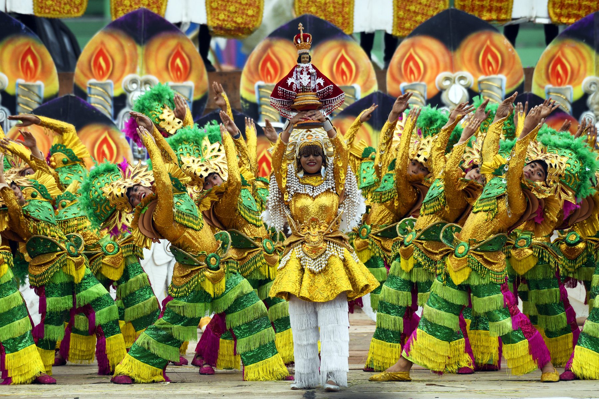
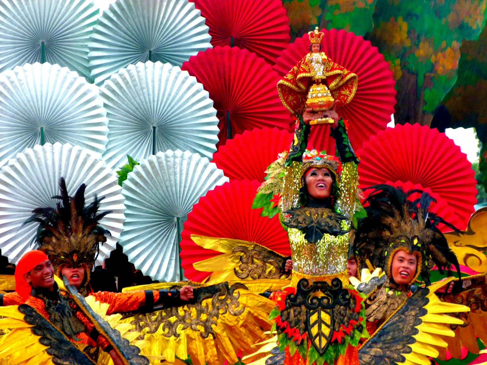
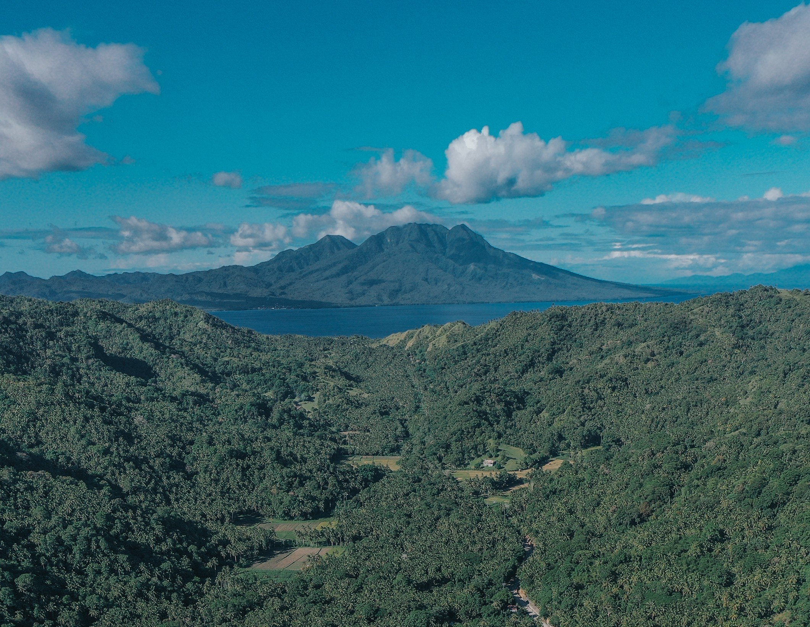
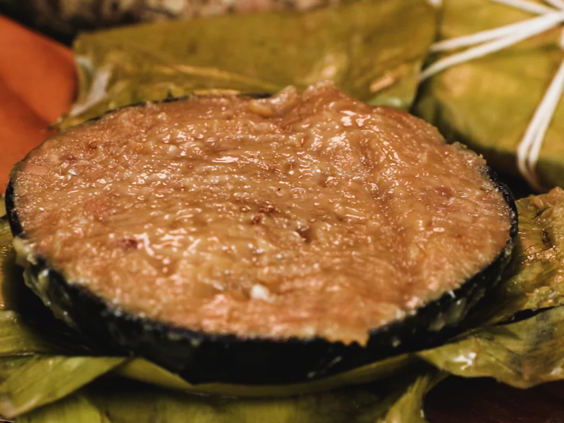

Beyond its natural attractions, Leyte offers a vibrant range of local activities that allow visitors to experience everyday life, culture, and community. From lively festivals to simple outdoor pastimes, these activities give travelers a more personal and immersive way to explore the province.

Local activities in Leyte reflect the warmth and energy of its people. One of the most celebrated events is the Pintados-Kasadyaan Festival in Tacloban City, where colorful street dances and performances showcase the region’s history and traditions. Visitors can also explore local markets, try traditional games, or join community events that highlight the province’s cultural identity.
For those seeking more relaxed experiences, everyday activities such as biking along coastal roads, visiting town plazas, or enjoying local gatherings provide a deeper connection to the area. These simple yet meaningful experiences allow travelers to see Leyte beyond tourist spots—offering a glimpse into the lifestyle, traditions, and spirit of the local community.

The Pintados-Kasadyaan Festival features street dancing, music, and cultural performances
Tacloban City is a hub for local events, markets, and community activities
Participating in community events offers a more authentic travel experience.

